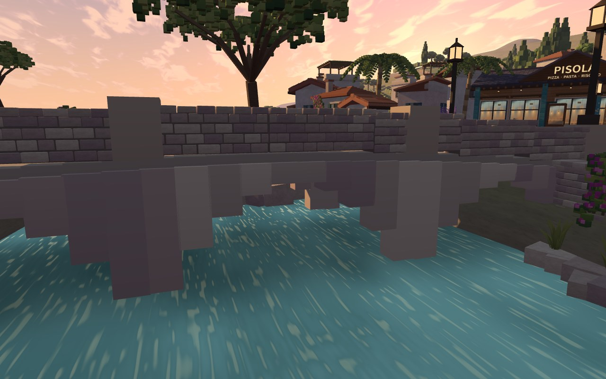
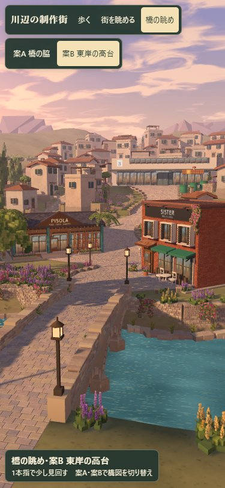

石橋の脇から、手前に川とアーチ、左にPISOLA、右にSISTER、奥に坂と展示館が重なる構図を探しました。どちらも「橋の眺め」モードで固定した鑑賞視点で、ドラッグで少しだけ見回せます。歩行開始位置と「街を眺める」の自由操作はそのまま残しています。
縦長画面では、両店舗が収まるよう案ごとに別のカメラ位置と画角を使っています。
夕日と反対側を向く面に、川と石畳から返る弱い暖色光を足しました。PISOLAの軒下には、ペンダント照明の光が店先へこぼれる点光源を置いています。葉は太陽を背にした面が薄く透け、太陽の方向を見たときに黄緑に光ります。
| 領域 | 変更前 平均 | 変更後 平均 | 変更前 暗部 | 変更後 暗部 |
|---|---|---|---|---|
| 案A 左上の葉 | 85.8 | 104.5 | 63.2% | 18.7% |
| 案A PISOLA正面 | 67.7 | 82.2 | 53.3% | 27.0% |
| 案B 左の葉 | 62.4 | 82.1 | 66.6% | 18.1% |
| 案B PISOLA正面 | 67.0 | 81.4 | 55.7% | 28.0% |
返り光は全体に効くため、SISTERの側面など日陰の面もやや明るくなり、陰影は前回より浅くなっています。
前回までの橋は側面が段状の箱で、横から見てもアーチに読めませんでした。歩行の通路と判定は変えずに、3連の楕円アーチ、迫石の輪、要石、暗めの穹窿の裏面、橋脚の水切りを加えています。




見出しの「歩く／街を眺める／橋の眺め」でモードを選びます。「橋の眺め」では案Aと案Bを切り替えられ、ドラッグ（PCはQ/Eも可）で左右約18°、上下約10°まで見回せます。案のボタンをもう一度押すと元の構図に戻ります。
「歩く」に戻ると、鑑賞前の歩行位置と向きから再開します。